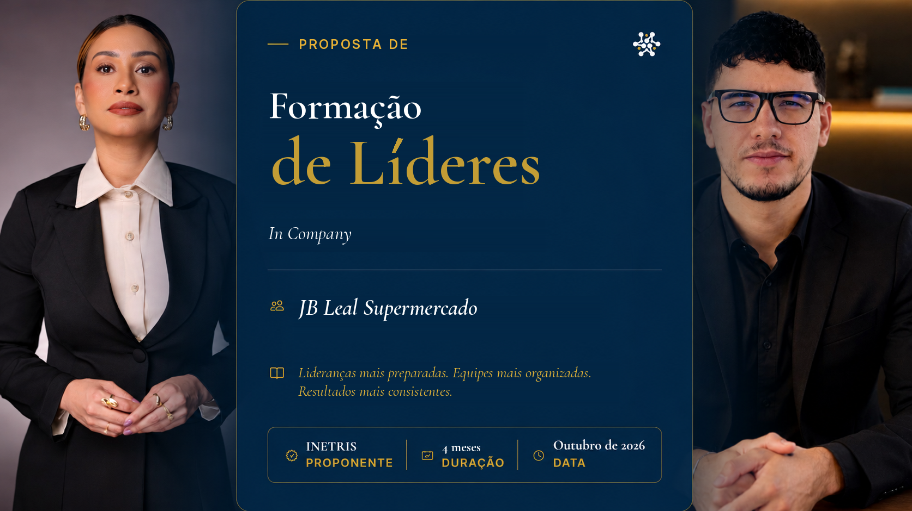
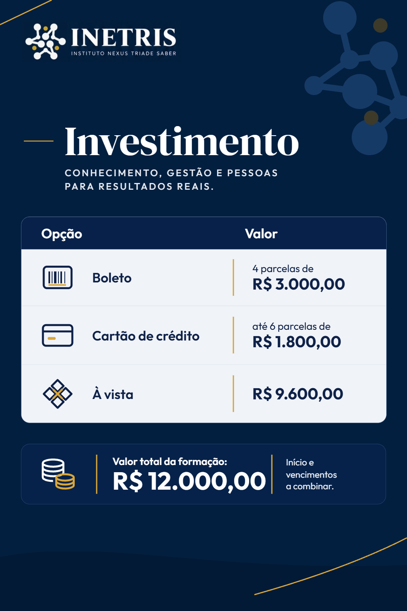

No INETRIS, acreditamos que organizações extraordinárias não são fruto do acaso.
Elas são construídas por pessoas preparadas para evoluir continuamente.
Por isso, nossa atuação vai além da consultoria. Desenvolvemos ambientes onde estratégia, cultura, liderança e gestão caminham juntas para gerar resultados sustentáveis.
Porque toda transformação começa de dentro.
Proposta de Formação de Líderes In Company — JB Leal Supermercado

01 APRESENTAÇÃO
Quem Somos
02 RESULTADOS E RELATOS
Experiência que Gera Confiança
Já atuamos em 14 empresas
Atuação nos setores público e privado.
+800 colaboradores impactados
Experiência prática no desenvolvimento de pessoas, lideranças e organizações.
O que nossos clientes dizem
“
Olhando para trás, a minha principal mudança na liderança foi entender que liderar não é só apagar incêndios no dia a dia — que era o que eu mais fazia — mas ter clareza de onde queremos chegar e como conduzir a equipe até lá. Antes, muitas decisões eram tomadas no automático ou no calor do momento para tentar conduzir o mais rápido possível a situação. Hoje, consigo olhar para a situação enxergando o negócio como um todo, com mais estratégia, intenção e paciência para desenvolver as pessoas ao meu redor e tomar a melhor decisão a longo prazo.
Liderança
“
Desde o começo da mentoria, eu passei a olhar a empresa com uma visão de como ela realmente devia ser — como no início, quando eu tinha entrado na empresa. Comecei a pensar no todo, entender melhor o que está funcionando e também qual é o meu papel nisso. A principal mudança, para mim, foi perceber que eu não preciso tentar resolver tudo sozinha, mas, se necessário, eu vou lá e faço; se errar, erro rápido.
Colaborador
03 CAPÍTULO 1
Contexto atual
A JB Leal está vivendo um processo de fortalecimento da gestão, da cultura organizacional e da estrutura interna da empresa. À medida que a operação cresce, aumenta também a necessidade de preparar líderes que saibam:
- Comunicar com clareza
- Orientar e acompanhar as equipes
- Distribuir responsabilidades
- Corrigir falhas de maneira adequada
- Conduzir reuniões produtivas
- Dar e receber feedbacks
- Acompanhar metas e indicadores
- Resolver conflitos
- Desenvolver colaboradores
- Representar, na prática, a cultura da JB Leal
O crescimento da empresa precisa ser acompanhado pelo desenvolvimento das pessoas que estão à frente das equipes.
04 CAPÍTULO 2
Por que a Formação de Líderes faz sentido para a JB Leal agora
A JB Leal está entrando em uma nova fase. O grupo cresceu e passou a operar com novas empresas, entre elas a JBLA Utilidades, a nova loja de utilidades.
Cada nova unidade significa
Mais equipes
Mais processos
Mais decisões
acontecendo ao mesmo tempo.
Nesse novo momento, a atenção da direção passa a ser dividida entre mais frentes. Por mais que Marquinhos tenha suporte, é impossível estar presente em todas as operações, em todos os setores, o tempo inteiro.
A empresa não pode continuar dependendo de uma única pessoa para resolver tudo.
É exatamente por isso que este é o momento certo para investir em liderança. Preparar líderes significa formar pessoas capazes de:
Conduzir suas equipes com autonomia
Cobrar resultados
Resolver problemas do dia a dia
Manter o padrão da empresa mesmo quando a direção não está presente
Quando a empresa cresce, a direção precisa multiplicar liderança — não sobrecarga.
A Formação de Líderes In Company garante que cada nova fase da JB Leal seja acompanhada por pessoas preparadas para sustentá-la. É o que permite que o grupo continue crescendo com segurança, sem que o crescimento se transforme em dependência da direção.
05 CAPÍTULO 3
O desafio
Muitos profissionais assumem funções de liderança pelo conhecimento técnico, pela experiência ou pelo tempo de empresa, mas nem sempre recebem preparação para liderar pessoas. Sem essa formação, podem surgir dificuldades como:
- Centralização excessiva das decisões
- Falta de acompanhamento das atividades
- Comunicação pouco clara
- Dificuldade para cobrar e corrigir
- Conflitos não resolvidos
- Reuniões sem direcionamento
- Falta de feedback
- Equipes dependentes do proprietário ou da direção
- Baixa responsabilização dos colaboradores
- Dificuldade para transformar metas em ações
- Falta de padronização entre setores
- Distanciamento entre a cultura definida e os comportamentos praticados
06 CAPÍTULO 4
Os impactos
Quando os líderes não estão preparados, os efeitos aparecem em toda a operação:
- Retrabalho
- Falhas de comunicação
- Queda na produtividade
- Perdas operacionais
- Problemas no atendimento
- Dificuldade para cumprir processos
- Aumento da rotatividade
- Sobrecarga da direção
- Clima organizacional desgastado
- Falta de integração entre setores
- Baixo comprometimento com metas e resultados
No varejo, pequenos erros de liderança podem gerar grandes impactos na rotina, no estoque, no atendimento, nas vendas e na experiência do cliente.
07 CAPÍTULO 5
Metodologia INETRIS
Antes de apresentar o que será feito, é importante entender como será feito. Tudo o que a JB Leal vivenciará nesta formação será conduzido pela Metodologia INETRIS — o método que garante que o aprendizado não fique restrito à sala de treinamento e se transforme em prática real na operação.
Cada encontro seguirá quatro etapas
01
Aprender
Apresentação do conteúdo e das ferramentas.
02
Praticar
Exercícios, simulações e estudos de casos.
03
Aplicar
Atividade executada na rotina da JB Leal.
04
Evoluir
Análise dos resultados e feedback no encontro seguinte.
Dessa maneira, cada conteúdo trabalhado gera uma aplicação real na liderança e na operação.
É o método que transforma teoria em comportamento e comportamento em resultado.
Aprender. Praticar. Aplicar. Evoluir.
Esse é o caminho INETRIS.
08 CAPÍTULO 6
A solução — o que vamos fazer
4
meses de duração
Aplicando a Metodologia INETRIS, propomos uma Formação de Líderes In Company com duração de quatro meses, desenvolvida de acordo com a realidade da JB Leal.
O programa combina
Conhecimento
Prática
Acompanhamento
Os participantes não apenas aprenderão conceitos de liderança: serão incentivados a aplicá-los na rotina, apresentar resultados, analisar dificuldades e corrigir comportamentos.
A formação será direcionada aos desafios reais de um supermercado varejista e atacadista, trabalhando situações relacionadas a:
Atendimento
Vendas
Frente de caixa
Reposição
Estoque
Prevenção de perdas
Organização de setores
Produtividade
Comunicação entre equipes
Cumprimento de processos e metas
09 A SOLUÇÃO
Estrutura do programa
Duração
4meses
Frequência
2encontros por mês
Total
8encontros
Modalidade
Presenciale in company
Abordagem
Prática, aplicada e direcionada à realidade da JB Leal.
O programa inclui
Atividades entre os encontros
Simulações de situações reais
Feedbacks individuais e coletivos
Acompanhamento da evolução dos líderes
Aplicação de ferramentas de gestão
Utilização do Sistema INETRIS durante quatro meses(pagamento à vista ou no cartão)
10 JORNADA DE DESENVOLVIMENTO
Mês 1 — Identidade e papel da liderança
Encontro 1
De colaborador a líder
- O que é liderar
- Diferença entre chefe, gestor e líder
- Responsabilidade de quem assume uma equipe
- Liderança pelo exemplo
- Autoridade, postura e credibilidade
- O líder como representante da empresa
- Limites entre amizade, proximidade e responsabilidade
- O papel do líder na operação do supermercado
- Decisões que podem ou não ser tomadas pelo líder
Encontro 2
Cultura, valores e comportamento
- Cultura organizacional na prática
- Como os valores da JB Leal devem aparecer nas atitudes
- O líder como guardião da cultura
- Comportamentos aceitáveis e inaceitáveis
- Coerência entre discurso e exemplo
- Como transformar diretrizes em hábitos
- Construção de acordos de liderança
Mês 1
Aplicação prática
- Autodiagnóstico de liderança
- Definição de responsabilidades
- Identificação dos principais desafios de cada setor
- Plano individual de desenvolvimento
- Construção dos primeiros compromissos de liderança
11 JORNADA DE DESENVOLVIMENTO
Mês 2 — Comunicação e feedback
Encontro 3
Comunicação clara e assertiva
- Como orientar sem gerar interpretações diferentes
- Como delegar uma tarefa com clareza
- Comunicação entre setores
- Escuta ativa
- Postura, tom de voz e linguagem
- Como confirmar se o colaborador compreendeu
- Alinhamento de expectativas
- Como evitar ruídos, fofocas e informações desencontradas
Encontro 4
Feedback, correção e reconhecimento
- O que é e o que não é feedback
- Como preparar uma conversa de feedback
- Feedback positivo, corretivo e de desenvolvimento
- Como corrigir sem humilhar
- Como tratar comportamentos reincidentes
- Como registrar e acompanhar acordos
- Reconhecimento como ferramenta de liderança
- Como receber feedback sem assumir postura defensiva
Mês 2
Aplicação prática
- Roteiro de feedback
- Simulações de conversas difíceis
- Realização de um feedback acompanhado
- Plano de comunicação interna do setor
- Registro dos acordos estabelecidos com a equipe
12 JORNADA DE DESENVOLVIMENTO
Mês 3 — Organização, processos e delegação
Encontro 5
Gestão da rotina e dos processos
- Organização da rotina do líder
- Definição de prioridades
- Planejamento diário e semanal
- Uso de checklists
- Cumprimento de padrões
- Distribuição de atividades
- Passagem de turno
- Integração entre setores
- Identificação de gargalos operacionais
- Como reduzir improvisos e retrabalho
Encontro 6
Delegação e autonomia
- O que delegar e o que não delegar
- Como escolher a pessoa adequada
- Delegação com prazo, padrão e resultado esperado
- Níveis de autonomia
- Acompanhamento sem microgerenciamento
- Responsabilidade do líder depois de delegar
- Como desenvolver pessoas mais independentes
- Como deixar de ser o líder que resolve tudo sozinho
Mês 3
Aplicação prática
- Mapeamento da rotina do setor
- Criação de checklist operacional
- Matriz de responsabilidades
- Exercício de delegação
- Identificação das atividades centralizadas no líder
13 JORNADA DE DESENVOLVIMENTO
Mês 4 — Resultados e consolidação da liderança
Encontro 7
Metas e indicadores
- Diferença entre atividade, entrega e resultado
- Como transformar metas em ações
- Indicadores importantes para a operação
- Produtividade da equipe
- Vendas e ticket médio
- Rupturas e disponibilidade de produtos
- Perdas e desperdícios
- Organização e reposição
- Qualidade do atendimento
- Pontualidade, absenteísmo e cumprimento de escalas
- Acompanhamento diário, semanal e mensal
Encontro 8
Consolidação e apresentação de resultados
- Revisão dos principais aprendizados
- Análise da evolução dos participantes
- Resultados obtidos durante a formação
- Apresentação dos projetos práticos
- Feedback final
- Fortalecimento dos acordos de liderança
- Plano de continuidade
- Compromissos para os próximos 90 dias
- Construção do padrão de liderança da JB Leal
Mês 4
Aplicação prática
- Construção do painel de indicadores do setor
- Definição de metas de curto prazo
- Avaliação prática da equipe
- Elaboração de um plano de melhoria
- Utilização dos recursos do Sistema INETRIS
- Avaliação final dos participantes
- Comparativo entre diagnóstico inicial e final
- Apresentação da evolução dos líderes
- Plano de continuidade
- Certificação de participação
14 CAPÍTULO 7
Entregas incluídas
13
entregas incluídas
- 8 encontros de formação
- Diagnóstico inicial dos líderes
- Material de apoio
- Ferramentas práticas de liderança
- Atividades entre os encontros
- Estudos de casos
- Simulações de conversas e feedbacks
- Modelos de reunião e acompanhamento
- Plano de Desenvolvimento Individual
- Acompanhamento da evolução dos participantes
- Avaliação inicial e final
- Relatório de encerramento
- Certificação dos participantes
15 CAPÍTULO 8
Benefícios exclusivos da JB Leal
Ao contratar a Formação de Líderes, a JB Leal não recebe apenas o programa: recebe um conjunto de benefícios que ampliam o valor da parceria com o INETRIS.
Benefício 1
4 meses
de mensalidade do Sistema INETRIS, sem custo adicional.
Benefício 2
20%
de cashback sobre o valor contratado em processos seletivos conduzidos pelo INETRIS.
Benefício 3
1
treinamento de atendimento para a equipe.
Benefício 4
Business Club
INETRIS sem custo para Marquinhos, além do acesso aos eventos do INETRIS.
16 BENEFÍCIO 1
Quatro meses de Sistema INETRIS
Com a contratação da formação e pagamento à vista ou no cartão de crédito, a JB Leal terá direito a quatro meses de mensalidade do Sistema INETRIS sem custo adicional.
O sistema apoiará o acompanhamento da gestão de pessoas por meio de recursos como
Desenhos de cargos
Avaliação de desempenho
PDI
Acompanhamento do desenvolvimento
Gestão de indicadores
Relatórios e dashboards
Registro da evolução dos colaboradores e líderes
Importante
A implantação e a configuração inicial do sistema não estão incluídas nesta condição e serão contratadas separadamente, no valor de R$ 990,00 para até 30 colaboradores. Durante os quatro meses concedidos, não haverá cobrança da mensalidade.
Recomendação
Disponibilizar o sistema desde o início da formação. Assim, os quatro meses acompanham toda a jornada e transformam o sistema em instrumento prático da liderança.
17 BENEFÍCIO 2
Condição especial para processo seletivo
Durante os quatro meses da formação, a JB Leal terá direito a uma condição especial em processos seletivos conduzidos pelo INETRIS:
Contratação de processo seletivo conforme a necessidade da empresa
20% de cashback sobre o valor contratado
O crédito poderá ser utilizado em uma próxima contratação de produto ou serviço do INETRIS
Condição válida durante o período da formação
Benefício 3
Treinamento de Atendimento
A JB Leal terá direito a um treinamento de atendimento para a equipe, com foco em atender cada cliente com mais qualidade.
Benefício 4
Eventos INETRIS e Business Club
A JB Leal terá acesso aos eventos promovidos pelo INETRIS, e Marquinhos participará do Business Club INETRIS sem custo, condição exclusiva para parceiros.
Investimento

18 CAPÍTULO 10
Resultado esperado
Ao final dos quatro meses, espera-se que os líderes da JB Leal estejam mais preparados para:
- Assumir o papel de liderança
- Comunicar com clareza
- Delegar e acompanhar
- Dar feedbacks
- Organizar a rotina
- Acompanhar metas e indicadores
- Desenvolver colaboradores
- Tomar decisões com mais segurança
- Reduzir a dependência da direção
- Fortalecer a cultura da empresa
Contribuir diretamente para os resultados da operação
19 COMPROMISSO INETRIS
Garantia INETRIS
Nosso compromisso com o combinado.

Acreditamos que uma parceria de transformação precisa ter responsabilidade dos dois lados. Por isso:
Se ao final do projeto as entregas e resultados acordados não forem cumpridos pelo INETRIS, garantimos a devolução do investimento, conforme as condições estabelecidas em contrato.
A garantia será vinculada a:
- Entregáveis definidos na proposta e no contrato.
- Prazos acordados.
- Critérios objetivos de cumprimento.
- Responsabilidades de cada parte.
- Condições específicas para aplicação da garantia.
Mais do que prometer transformação, assumimos responsabilidade pelo que foi contratado.
20 CAPÍTULO 11
Encerramento
A JB Leal já possui história, estrutura e potencial de crescimento. O próximo passo é garantir que cada profissional colocado à frente de uma equipe esteja verdadeiramente preparado para liderar. A Formação de Líderes In Company foi desenvolvida para transformar profissionais de confiança em líderes mais conscientes, organizados, seguros e orientados para pessoas e resultados.
Quem lidera não segue caminhos. Define direções.
INETRIS
Transformamos mentes para desenvolver, conectar e fortalecer profissionais, negócios e resultados por meio do conhecimento prático.